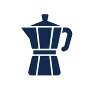

Caps Lock earns its place
Hold Caps Lock for Three Mod (Control, Option, Command). You can also choose Meh (Control, Option, Shift) or Hyper (all four). A quick tap sends Escape.

HyperMugA little more room in your shortcuts.
HyperMug lives in your Mac’s menu bar. Hold Caps Lock for a full set of shortcuts, tap it for Escape, and keep a few everyday controls close at hand.
For macOS · Configured in a local TOML file
The things you reach for all day, made easier to reach.
Hold Caps Lock for Three Mod (Control, Option, Command). You can also choose Meh (Control, Option, Shift) or Hyper (all four). A quick tap sends Escape.
Click the menu bar mug, then use the checked Stay Awake item for this session. Its filled or empty icon shows the current state; the next launch uses your saved preference.
Map Back, Forward, and the Logitech MX Master 3S thumb button to a shortcut, shell command, or shared helper. Invert mouse wheel scrolling when you want to.
Assign three- and four-finger swipes in any direction. Named helpers let multiple bindings share one command. A one-time macOS setup disables conflicting system gestures before you use them.
Left-click or right-click the mug to open its menu. The checked Stay Awake item controls this session. Settings… (⌘,) opens the TOML editor in the same native window as overview, permissions and activity. Save edits to ~/.config/hypermug.toml directly in HyperMug. Its schema lives inside the signed app. Saved edits reload automatically; native notifications report invalid settings and failed or timed-out shell actions.
autoUpdate = true
capsLock = "threeMod"
caffeineOnLaunch = true
[mouse.buttons]
back.helper = "previousWorkspace"Interface illustration · menu items and example settings
Install the signed, notarized Production app for macOS 14 or later on Apple Silicon with the commands below. HyperMug checks for updates once a day. If you have 0.3.0 or 0.3.1, run brew upgrade --cask maxmeis/hypermug/hypermug once; name the cask, because a bare brew upgrade skips it. Grant Accessibility and Input Monitoring when prompted, then relaunch the app.
brew tap maxmeis/hypermug https://github.com/maxmeis/hypermug
brew install maxmeis/hypermug/hypermug